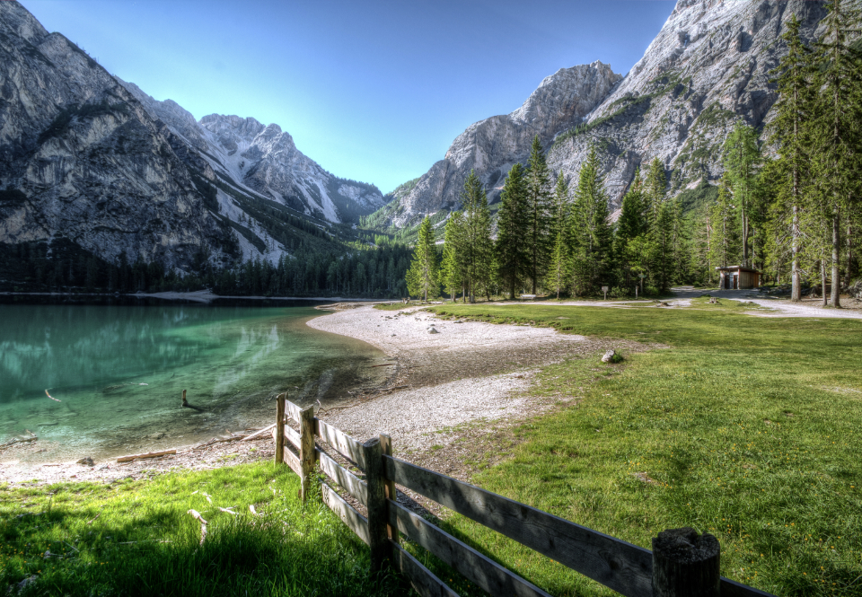

Plume · planche de direction · à valider
Déposez vos images, choisissez un niveau, téléchargez. Tout se passe sur votre appareil : aucune image ne quitte votre navigateur.

Avant · 2,4 MoAprès · 612 KoLe meilleur compromis pour le web. ≈ −70 % sur vos photos.
Désactivé : chaque image garde son format d'origine.
Titres · Familjen Grotesk 700
Plus léger.
Signature · Newsreader italique 300
Sans rien envoyer.
Texte · Onest 400
Déposez vos images, choisissez un niveau, téléchargez. Lisible à 16 px, interligne 1,55.